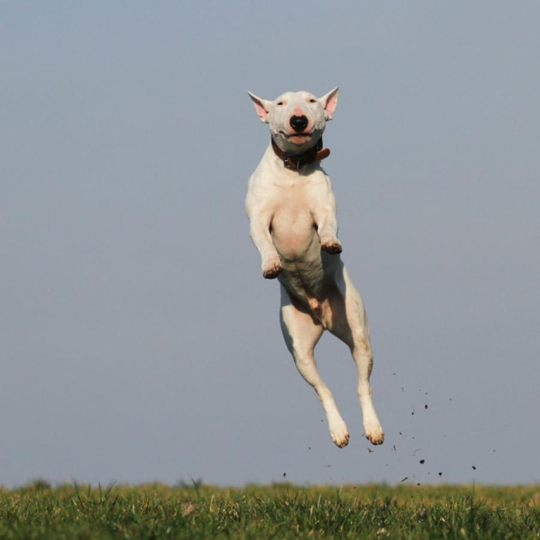

Agora
Adestradores
Autônomos com carteira recorrente. É com vocês que estamos construindo agora.
Clientes, sessões e valores a receber organizados no Telegram. Sem caderno, sem planilha, sem instalar outro app.
Acesso por convite. A gente chama você no WhatsApp.
Sem planilha, sem caderno e sem procurar conversa antiga no WhatsApp para lembrar quem ainda falta pagar.
Agenda, clientes e valores a receber no mesmo lugar onde você já conversa.
Abre pelo nosso bot. Não tem outro aplicativo para baixar.
Use os dois ao mesmo tempo, com os mesmos dados.
Se duas sessões se sobrepõem, você vê antes e decide se mantém.
Cada profissional vê apenas a própria carteira.
Estamos começando com quem atende sozinho uma carteira de clientes recorrentes. Passeador, creche ou banho e tosa? Fale com a gente também.

Autônomos com carteira recorrente. É com vocês que estamos construindo agora.
Primeiro, o básico bem feito. Estas ideias vieram das conversas com profissionais e ainda não têm data.
“Cancela a sessão de hoje do Thor.”
A ideia é que você mande um áudio ou uma mensagem e a JornadaPet entenda e registre. Quando faltar informação, ela pergunta.
A evolução do pet, sessão a sessão.
Um resumo que você revisa antes de enviar, para o tutor acompanhar o trabalho.
A JornadaPet nasceu de conversas com adestradores sobre a rotina de quem trabalha sozinho: atender bem, manter a agenda em ordem e lembrar quem ainda falta pagar, tudo ao mesmo tempo.
Hoje estamos transformando essas conversas em produto, começando pelo básico. Somos dois sócios, e respondemos pessoalmente quem se inscreve.
Acesso pelo Telegram, carteira de clientes, agenda e valores a receber.
Pedidos por áudio e resumo da sessão para o tutor.
Preço, quais profissionais mais precisam disso e se o Telegram é o canal certo.
O acesso é por convite. Deixe seu contato, e a gente chama você no WhatsApp para conversar e enviar o seu.
No horário que for melhor para você.
Sem custo enquanto estivermos testando.
O que você pedir entra na nossa lista de prioridades.
Vamos chamar você no WhatsApp nos próximos dias.
Ficou outra dúvida? Peça seu convite e pergunte na conversa pelo WhatsApp.